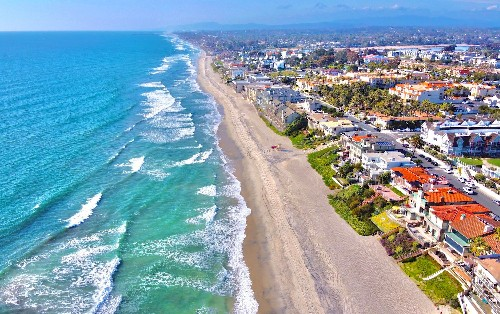

Always Providing You With Fresh Produce and Fruit Drinks

Located in Southern California, the quaint city of Carlsbad features beautiful sandy beaches, three unique lagoons, outstanding shopping, and world-class sporting events. Some main attractions include LEGOLAND with theme parks and rides, and the Flower Fields of Carlsbad Ranch with over 50 acres of flowers every spring.
Weather
Carlsbad, US
Contact Us
Address
2907 State St
Carlsbad, CA 92008
info@bountifulfoods.com
Phone
(760) 453-7076